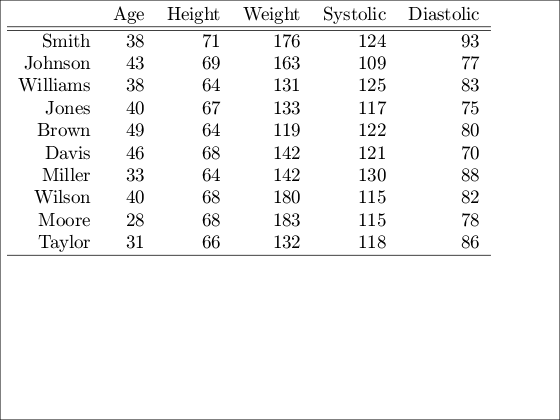
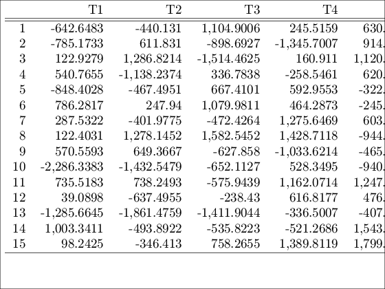

tabledisp
tabledisp displays in good format a table or array in the command line
Syntax
Description
tabledisp displays a table or o bi-dimensional array in the MATLAB command line or in a uitable.
Dispay a table in MATLAB annotations
load a generic dataset
load patients;
put it in a table
T = table(Age,Height,Weight,Systolic,Diastolic, ...latex_string
=tabledisp(T)
Dispay an array in a MATLAB annotation, with 6 digits of precision
generate data
X = randn(10,5);
and run tabledisp on them with the specification of the precision
[latex_string , disp_string] = tabledisp(X,6);
This is to produce a latex table display in a figure
hf = figure;
annotation(hf,'Textbox','String',latex_string,...latex_string
=tabledisp(T,
precision)
latex_string
=tabledisp(T,
precision,
filename)
[
latex_string ,
disp_string]
=tabledisp(___)
Examples
 Dispay a table in MATLAB annotations
load a generic dataset
load patients;
put it in a table
T = table(Age,Height,Weight,Systolic,Diastolic, ...
Dispay a table in MATLAB annotations
load a generic dataset
load patients;
put it in a table
T = table(Age,Height,Weight,Systolic,Diastolic, ...
Dispay a table in MATLAB annotations
load a generic dataset
load patients;
put it in a table
T = table(Age,Height,Weight,Systolic,Diastolic, ...load patients; % put it in a table T = table(Age,Height,Weight,Systolic,Diastolic, ... 'RowNames',LastName); % keep just few lines, as example Tsmall = T(1:10,:); % run tabledisp [latex_string , disp_string] = tabledisp(Tsmall); % Now use the output of tabledisp to diplay the latex table in the % annotation of a figure hf = figure; annotation(hf,'Textbox','String',latex_string,... 'FitBoxToText','on','Interpreter','latex',... 'FontName',get(0,'FixedWidthFontName'),'FontSize',14,... 'Units','Normalized','Position',[0 0 1 1]); % An this is to display the table in the command window without disp fprintf(disp_string);
RAW NAME | Age | Height | Weight | Systolic | Diastolic |
Smith | 38 | 71 | 176 | 124 | 93 |
Johnson | 43 | 69 | 163 | 109 | 77 |
Williams | 38 | 64 | 131 | 125 | 83 |
Jones | 40 | 67 | 133 | 117 | 75 |
Brown | 49 | 64 | 119 | 122 | 80 |
Davis | 46 | 68 | 142 | 121 | 70 |
Miller | 33 | 64 | 142 | 130 | 88 |
Wilson | 40 | 68 | 180 | 115 | 82 |
Moore | 28 | 68 | 183 | 115 | 78 |
Taylor | 31 | 66 | 132 | 118 | 86 |
(docroot)/FSDA/images or simply run routine downloadGraphicalOutput.m">
Dispay an array in a MATLAB annotation, with 6 digits of precision
generate data
X = randn(10,5);
and run tabledisp on them with the specification of the precision
[latex_string , disp_string] = tabledisp(X,6);
This is to produce a latex table display in a figure
hf = figure;
annotation(hf,'Textbox','String',latex_string,...
Dispay an array in a MATLAB annotation, with 6 digits of precision
generate data
X = randn(10,5);
and run tabledisp on them with the specification of the precision
[latex_string , disp_string] = tabledisp(X,6);
This is to produce a latex table display in a figure
hf = figure;
annotation(hf,'Textbox','String',latex_string,...X = randn(10,5); % and run tabledisp on them with the specification of the precision [latex_string , disp_string] = tabledisp(X,6); % This is to produce a latex table display in a figure hf = figure; annotation(hf,'Textbox','String',latex_string,... 'FitBoxToText','on','Interpreter','latex',... 'FontName',get(0,'FixedWidthFontName'),'FontSize',14,... 'Units','Normalized','Position',[0 0 1 1]); % This is to display the table in the command window without disp fprintf(disp_string);
RAW NAME | T1 | T2 | T3 | T4 | T5 |
1 | -0.21218 | -0.73111 | -1.1869 | -1.6002 | -0.95075 |
2 | -0.87436 | -1.007 | -0.93505 | 0.59234 | -0.93701 |
3 | 0.20031 | 0.13874 | 0.47912 | 1.6094 | -2.8143 |
4 | -0.18169 | 0.45863 | 1.2724 | 0.16369 | 0.51508 |
5 | 0.75857 | 0.33177 | 0.97699 | 0.46368 | 0.33131 |
6 | -0.064883 | 1.003 | -1.3426 | -0.43986 | 0.62567 |
7 | -0.99228 | 1.3228 | -1.3263 | 0.43073 | 0.20414 |
8 | 1.5257 | 0.64936 | 1.106 | -0.64503 | -0.56322 |
9 | 0.5148 | -1.5765 | -0.27196 | 0.26011 | 0.44089 |
10 | -1.3793 | -2.3383 | 0.28106 | -0.047229 | 0.92214 |
(docroot)/FSDA/images or simply run routine downloadGraphicalOutput.m">
Input Arguments
Output Arguments
References
Lamport, L. (1994), LATEX: a document preparation system:
user's guide and reference manual. Addison-Wesley Longman Publishing Co., Inc., USA.